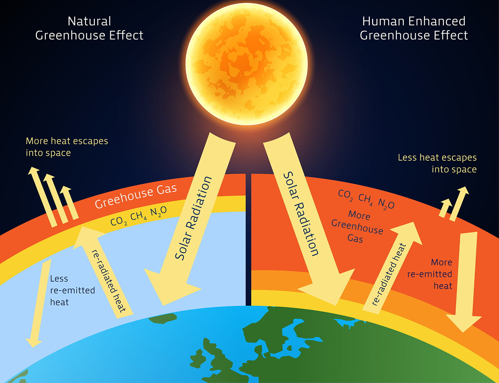

Les gaz à effet de serre
Parler de changement climatique sans parler des gaz à effet de serre, c'est un peu comme parler d'un incendie sans mentionner l'oxygène. Ces gaz sont le mécanisme central par lequel les activités humaines perturbent le système climatique, et comprendre leur nature, leurs sources et leur comportement dans l'atmosphère est indispensable pour saisir pourquoi le problème est si difficile à résoudre rapidement. Cette page présente les principaux gaz à effet de serre d'origine anthropique, leur évolution depuis l'ère préindustrielle et les tendances globales des émissions mondiales.
L'effet de serre : un mécanisme naturel devenu problème humain
L'effet de serre est, à la base, un phénomène naturel et indispensable à la vie telle qu'on la connaît. Sans lui, la température moyenne à la surface de la Terre serait d'environ -18 °C au lieu des 15 °C actuels. Le mécanisme est relativement simple : le rayonnement solaire traverse l'atmosphère et réchauffe la surface terrestre, qui réémet ensuite de la chaleur sous forme de rayonnement infrarouge. Certains gaz présents dans l'atmosphère absorbent une partie de ce rayonnement infrarouge sortant et le renvoient dans toutes les directions, dont vers la Terre. C'est ce qu'on appelle l'effet de serre.
Le problème vient de l'augmentation rapide et massive de la concentration de ces gaz depuis le début de la révolution industrielle. En piégeant davantage de chaleur, un effet de serre amplifié perturbe l'équilibre énergétique de la planète et provoque un réchauffement global. Ce que les scientifiques mesurent depuis des décennies n'est pas un phénomène naturel de plus dans l'histoire climatique de la Terre : c'est une modification du système par l'activité humaine, à une vitesse géologiquement sans précédent.

Les principaux gaz à effet de serre d'origine humaine
Tous les gaz à effet de serre ne se comportent pas de la même façon. Ils diffèrent par leurs sources d'émission, par leur durée de vie dans l'atmosphère et par leur capacité à piéger la chaleur. Pour comparer leur impact respectif, les scientifiques utilisent le concept de potentiel de réchauffement global (PRG), qui exprime la capacité d'un gaz à réchauffer l'atmosphère sur une période donnée (généralement 100 ans) par rapport à une quantité équivalente de CO2, dont le PRG est fixé à 1 par convention.
Le dioxyde de carbone (CO2) est le gaz à effet de serre le plus abondant émis par les activités humaines. Il provient principalement de la combustion des énergies fossiles (charbon, pétrole, gaz naturel) et de la déforestation. Bien que son PRG soit le plus faible parmi les principaux GES, sa durée de vie exceptionnellement longue dans l'atmosphère (une fraction significative persiste pendant des millénaires) en fait le principal contributeur au réchauffement observé sur le long terme. Selon le sixième rapport d'évaluation du Groupe d'experts intergouvernemental sur l'évolution du climat (GIEC, 2021), le CO2 est responsable de la plus grande part du forçage radiatif anthropique cumulé.
Le méthane (CH4) est émis par l'élevage (fermentation entérique des ruminants), les rizières, les fuites dans l'industrie des combustibles fossiles, les décharges et tout autre processus de décomposition de la matière organique. Son PRG sur 100 ans est estimé à environ 27 à 30 fois celui du CO2 selon le sixième rapport du GIEC, et monte à environ 80 fois sur un horizon de 20 ans. Cela signifie que réduire les émissions de méthane a un effet climatique rapide et substantiel, ce qui en fait une cible prioritaire pour les politiques d'atténuation à court terme.
Le protoxyde d'azote (N2O) provient surtout de l'agriculture intensive, en particulier de l'utilisation d'engrais azotés synthétiques et de la gestion des déjections animales. La combustion de combustibles fossiles et certains procédés industriels y contribuent également. Son PRG sur 100 ans est estimé à environ 273 fois celui du CO2 (GIEC, 2021), et sa durée de vie dans l'atmosphère dépasse un siècle. Bien que ses volumes d'émission soient inférieurs à ceux du CO2 et du CH4, son pouvoir de réchauffement en fait un acteur non négligeable du bilan climatique mondial.
D'autres gaz industriels, comme les hydrofluorocarbures (HFC), les perfluorocarbures (PFC) et l'hexafluorure de soufre (SF6), ont des PRG extrêmement élevés, parfois des dizaines de milliers de fois supérieurs à celui du CO2. Ils sont émis en quantités beaucoup plus faibles, mais leur persistance dans l'atmosphère et leur puissance de réchauffement les rendent préoccupants sur le très long terme. Leur réglementation fait l'objet d'accords internationaux spécifiques, dont le Protocole de Montréal et son amendement de Kigali (2016).
L'évolution des émissions mondiales totales
Le graphique suivant présente l'évolution des émissions mondiales totales de gaz à effet de serre depuis le début de la révolution industrielle, exprimées en milliards de tonnes d'équivalent CO2 (Gt CO2eq). Ces données, compilées par Our World in Data à partir des travaux de Climate Watch et du GIEC, incluent le CO2, le CH4, le N2O et les gaz fluorés, couvrant l'ensemble des secteurs d'activité.
Ce que ce graphique révèle est sans ambiguïté : les émissions mondiales de GES ont connu une croissance quasi ininterrompue depuis les années 1850, avec une accélération marquée à partir des années 1950, coïncidant avec la fin de la seconde guerre mondiale, l'augmentation de l'industrialisation et du recourt à des moyens de transport consommant des combustibles fossiles. Les émissions totales ont plus que doublé entre 1969 et 2024, passant d'environ 27 milliards à plus de 54 milliards de tonnes d'équivalent CO2 par an. Seules quelques périodes montrent un ralentissement notable, dont la crise économique mondiale de 2008-2009 et la pandémie de COVID-19 en 2020, deux chocs externes temporaires qui n'ont pas modifié la trajectoire structurelle à la hausse.
Il est important de préciser que ces chiffres agrégés masquent des réalités très différentes selon les pays et les régions. La Chine est aujourd'hui le premier émetteur mondial en volume absolu, suivie des États-Unis et de l'Inde. Cependant, quand on ramène les émissions à la population, le portrait change considérablement : les pays à revenus élevés, dont le Canada, affichent des émissions par habitant largement supérieures à des pays comme la Chine. Cette distinction entre responsabilité historique cumulée et émissions actuelles est au coeur des tensions dans les négociations climatiques internationales depuis des décennies.
Concentrations atmosphériques : ce que l'atmosphère enregistre
Les émissions annuelles sont une chose ; les concentrations atmosphériques en sont une autre, et c'est cette deuxième mesure qui détermine directement l'intensité de l'effet de serre. Une partie du CO2 émis est absorbée par les océans et la biosphère terrestre, mais une fraction significative reste dans l'atmosphère pendant des siècles. Cela signifie que même si les émissions mondiales cessaient demain, les concentrations continueraient d'exercer leur effet pendant très longtemps. C'est ce qu'on appelle l'inertie climatique, et c'est l'une des raisons pour lesquelles l'action précoce est si cruciale.
Les trois graphiques suivants illustrent l'évolution des concentrations atmosphériques de CO2, de CH4 et de N2O à partir des années 1979, 1983 et 2001, respectivement. Les données proviennent de carottes de glace pour les périodes anciennes et de mesures directes pour les décennies récentes, notamment depuis l'Observatoire de Mauna Loa (Hawaï), où les mesures continues de CO2 ont été initiées par Charles David Keeling en 1958.
Naturellement, la concentration atmosphérique de CO2 était systématiquement en dessous de 280 parties par million (ppm) pendant les 10 000 années précédant la révolution industrielle. Elle a franchi le seuil symbolique de 400 ppm pour la première fois en 2013, et dépassait régulièrement 420 ppm en 2025. C'est une hausse de plus de 50 % en à peine deux siècles, un changement dont l'ampleur n'a pas d'équivalent dans les archives géologiques des 800 000 dernières années reconstituées à partir des carottes de glace.
La situation du méthane est tout aussi préoccupante. Sa concentration atmosphérique, d'environ 722 parties par milliard (ppb) à l'ère préindustrielle, dépassait 1 900 ppb en 2022, soit plus du double. Ce qui inquiète particulièrement les scientifiques, c'est l'accélération de la hausse observée depuis 2007 et surtout depuis 2020, dont les causes ne sont pas encore entièrement élucidées mais pourraient impliquer une amplification des émissions naturelles depuis les zones humides tropicales en réponse au réchauffement lui-même. Le N2O, quant à lui, est passé d'environ 270 ppb à plus de 335 ppb, une progression plus lente mais constante, étroitement corrélée à l'expansion de l'agriculture industrielle mondiale.
Ces courbes ne sont tout simplement pas des fluctuations naturelles. Elles sont un calque des indicateurs économiques en croissance soutenue, ce qui reflète assez bien leur nature réelle : elles sont le produit direct de l'expansion des économies industrielles, de la croissance démographique et des choix énergétiques collectifs que les sociétés ont faits depuis deux siècles.
En conclusion
Les données présentées sur cette page dressent un portrait cohérent et bien documenté d'une perturbation profonde du système atmosphérique terrestre. Les émissions mondiales de GES ont plus que doublé en cinquante ans, et les concentrations atmosphériques atteignent des niveaux sans précédent depuis au moins 800 000 ans. Ces deux réalités se renforcent mutuellement et ne laissent guère de place à l'ambiguïté sur l'origine et la trajectoire du réchauffement climatique observé.
Comprendre les gaz à effet de serre, c'est aussi comprendre pourquoi les solutions au changement climatique ne peuvent pas être uniquement individuelles. Les émissions sont profondément ancrées dans des structures économiques, énergétiques et agricoles qui ont été construites sur plusieurs générations. Les modifier à la vitesse que requiert l'urgence climatique implique des transformations systémiques qui dépassent largement les choix de consommation de chaque citoyen, aussi importants soient-ils. La prochaine section examine ce que les données montrent sur l'état actuel du climat, c'est-à-dire les effets concrets et déjà mesurables de cette accumulation de GES.